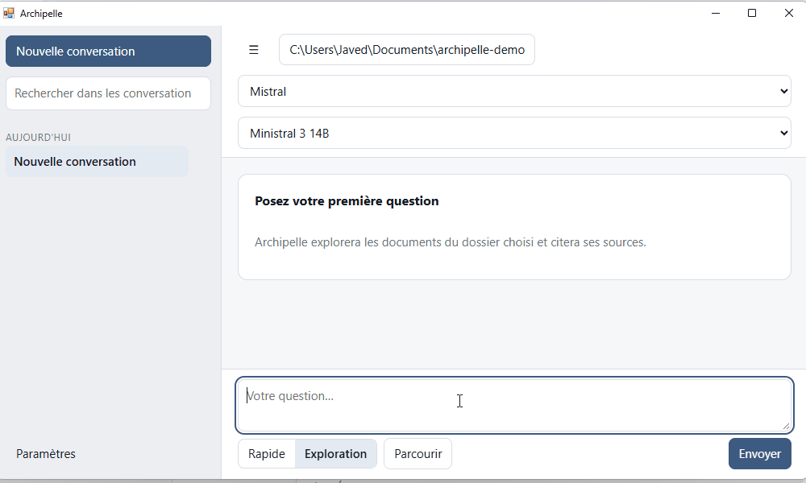
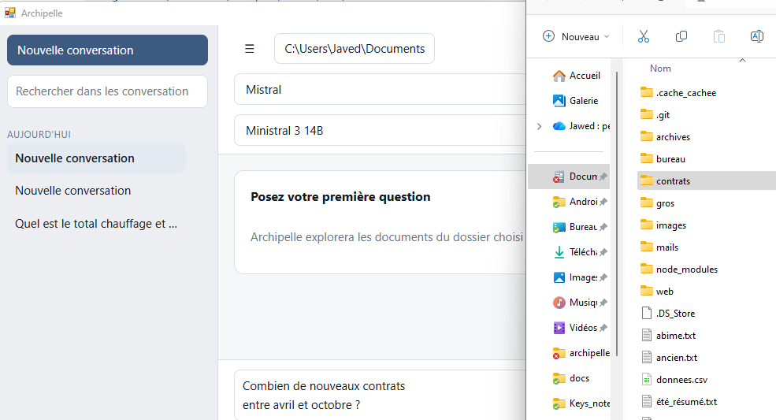
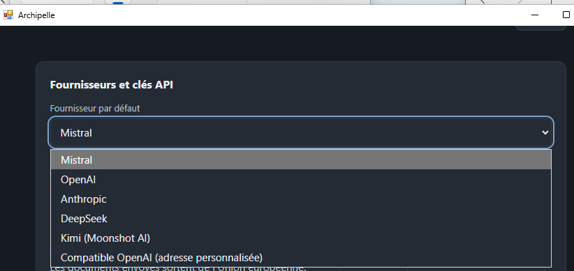

Retrouver une information dans ses propres fichiers est un problème banal et curieusement mal résolu. Les moteurs de recherche du système d'exploitation cherchent des noms de fichiers ; les outils d'IA, eux, demandent presque tous de constituer au préalable une copie de vos documents dans une base spécialisée.
Archipelle prend le problème autrement. C'est une application de bureau à qui l'on pose une question en français sur un dossier de son ordinateur. Elle va y chercher la réponse au moment où on la lui demande, lit les documents qui semblent pertinents, et répond en citant les fichiers dont elle s'est servie.

Chercher au lieu d'indexer
La plupart des outils qui « discutent avec vos documents » reposent sur le même mécanisme : une phase d'indexation découpe chaque fichier en fragments, les convertit en vecteurs numériques et les range dans une base de données dédiée. La recherche se fait ensuite dans cette base, jamais dans les fichiers d'origine.
Ce procédé a des conséquences concrètes. Il faut attendre la fin de l'indexation avant de pouvoir poser la première question. Il faut la relancer à chaque modification, sous peine de travailler sur une image périmée du dossier. Et il existe désormais, quelque part sur le disque, une seconde copie du contenu de vos documents.
Archipelle n'a pas de base vectorielle. Un agent parcourt l'arborescence du dossier de travail, cherche dans le contenu des fichiers, ouvre ceux qui paraissent utiles et lit les passages qui répondent à la question. Rien n'est préparé à l'avance, rien n'est recopié ailleurs. Le dossier que vous désignez est lu tel qu'il est, à l'instant où vous posez la question.
Des sources vérifiées par le programme, pas par le modèle
Un modèle de langage à qui l'on demande de citer ses sources produit des références plausibles — ce qui n'est pas la même chose que des références exactes. C'est l'une des formes les plus courantes d'hallucination, et l'une des plus difficiles à repérer, parce qu'un nom de fichier inventé ressemble beaucoup à un nom de fichier réel.
Archipelle ne fait pas confiance au modèle sur ce point. Le programme conserve la liste des fichiers qu'il a effectivement ouverts et lus au cours de la recherche. Quand la réponse cite une source, cette citation est confrontée à cette liste : si le fichier n'y figure pas, il est affiché comme non vérifié. La vérification est faite par le logiciel, à partir de ce qu'il a réellement fait, et non par le modèle à partir de ce qu'il affirme.
C'est une différence de nature. Le lecteur n'a pas à croire la réponse sur parole : chaque source est un fichier cliquable, qu'il peut ouvrir pour vérifier par lui-même.
Ce que fait Archipelle
- Il explore à la demande. L'agent parcourt l'arborescence du dossier choisi, cherche dans le contenu, et ouvre les documents qui semblent contenir la réponse. Aucune indexation préalable, aucune copie de vos fichiers.
- Il cite ses sources. Chaque affirmation renvoie à un fichier cliquable. Une source que le programme n'a pas réellement lue est signalée comme non vérifiée.
- Il montre son travail. Une zone de transparence affiche en direct les recherches en cours, les fichiers consultés et ceux qui ont été écartés, avec la raison de cet écartement.
- Il dit ce qu'il n'a pas fait. Recherche arrivée à son plafond, document scanné non traité, fichier protégé : ces manques sont annoncés dans la réponse, jamais passés sous silence.
- Il s'arrête quand on le lui demande. Un bouton d'arrêt interrompt immédiatement la recherche en cours.
Ce dernier point mérite qu'on s'y arrête. Un outil qui annonce ses propres limites est plus utile qu'un outil qui répond toujours : savoir qu'une recherche n'a couvert qu'une partie du dossier change la confiance qu'on accorde à la réponse, et permet de reformuler la question ou de restreindre le dossier de travail.
Deux manières de chercher
Le mode Rapide convient aux recherches courantes : il va au plus direct et répond en peu d'étapes. Le mode Exploration pousse la recherche plus loin, avec davantage d'étapes successives, et active la reconnaissance de texte sur les documents scannés. Il est plus lent, et se réserve aux questions qui le méritent.
Les formats lus
Installation
Archipelle s'installe depuis PyPI, le dépôt de paquets Python. Le seul prérequis est Python 3.12 ou plus récent. Deux commandes suffisent : la première installe l'application, la seconde la lance.
$ pip install archipelle
$ archipelleSi vous utilisez uv, l'installation passe par une commande équivalente. uv
est un gestionnaire de paquets Python récent, plus rapide que pip, qui installe
chaque outil dans son propre environnement isolé — pratique si vous avez déjà plusieurs
programmes Python sur votre machine et que vous préférez qu'ils ne se marchent pas dessus.
$ uv tool install archipelle
$ archipelleLire les documents scannés
La reconnaissance optique de caractères — l'OCR, qui permet de lire un PDF scanné ou la photo d'un document — repose sur Tesseract, un programme séparé à installer une fois pour toutes.
$ brew install tesseract tesseract-lang$ sudo apt install tesseract-ocr tesseract-ocr-fraSous Windows, il faut passer par l'installeur Tesseract d'UB Mannheim, en pensant à cocher le pack de langue française au moment de l'installation.
Cette étape reste facultative. Sans Tesseract, Archipelle fonctionne normalement : les documents scannés sont simplement signalés comme non lus dans la réponse. Pas de message d'erreur, pas de blocage — vous savez juste qu'ils n'ont pas été pris en compte.
Sous Linux
L'interface d'Archipelle s'appuie sur le moteur d'affichage du système, qui n'est pas toujours installé par défaut.
$ sudo apt install libwebkit2gtk-4.1-0 gir1.2-webkit2-4.1Premiers pas
- Choisir un dossier de travail. Au premier lancement, l'écran d'accueil demande le dossier dans lequel Archipelle aura le droit de chercher, et le fournisseur d'IA à utiliser. C'est ce dossier, et lui seul, qui sera exploré.
- Renseigner sa clé API. Elle se saisit dans les Paramètres. Archipelle la range dans un fichier séparé aux droits d'accès restreints, et ne la réaffiche jamais en clair.
- Poser sa question. En français, en langage ordinaire. La zone de transparence montre l'avancement de la recherche pendant que la réponse se construit.

Les fournisseurs d'IA acceptés
Archipelle ne fournit pas de modèle : il se connecte à celui de votre choix, avec votre propre clé. Le lecteur soucieux du traitement de ses données notera que Mistral traite les requêtes au sein de l'Union européenne, et que l'application sait aussi parler à un serveur local — auquel cas aucune donnée ne sort de la machine, y compris les extraits.

Avec certaines offres gratuites, les modèles les plus réputés refusent les requêtes et renvoient une erreur de limite de débit. Chez Mistral, les modèles Ministral 3 fonctionnent dans ce cas. Les Paramètres avancés permettent par ailleurs de saisir directement l'identifiant du modèle de son choix.
Ce que deviennent vos documents
C'est la question qui décide de l'usage qu'on peut faire d'un tel outil, alors autant y répondre précisément.
- Vos fichiers restent chez vous. Seuls les extraits nécessaires à la réponse sont transmis au fournisseur d'IA que vous avez choisi. Un avertissement signale les fournisseurs situés hors de l'Union européenne.
- Archipelle ne sait pas écrire. Aucun outil d'écriture n'existe dans le programme : il ne peut ni modifier, ni supprimer, ni créer le moindre fichier dans votre dossier. L'accès est en lecture seule — ce qui le distingue nettement des agents dotés de permissions d'écriture.
- L'historique reste local. Conversations, cache d'extraction et journaux sont stockés sur votre machine, et peuvent être effacés depuis les Paramètres.
- Les clés API ne sont jamais journalisées. Elles n'apparaissent dans aucun fichier de log.
Limites connues
Un outil honnête annonce ce qu'il ne fait pas bien. Voici les quatre limites que le projet assume.
- Les très petits modèles s'en sortent mal. En dessous de huit milliards de paramètres, un modèle enchaîne difficilement les appels d'outils successifs que suppose une exploration. Mieux vaut un modèle plus étoffé.
- La recherche est plafonnée. Sur un dossier très volumineux, l'exploration s'arrête avant d'avoir tout vu, et la réponse indique alors que la couverture est partielle. C'est un choix de conception, pas un défaut : le plafond existe pour que la recherche se termine.
- L'OCR dépend d'un programme externe. Tesseract s'installe séparément, et son absence limite la lecture des documents scannés.
- La qualité des réponses dépend du modèle. Archipelle organise la recherche et vérifie les sources ; la qualité de la rédaction finale reste celle du modèle que vous avez choisi.
Un projet ouvert
Archipelle est un logiciel libre, publié sous licence MIT : le code peut être utilisé, modifié et redistribué librement, y compris dans un cadre commercial, la seule obligation étant de conserver la mention de copyright. Le code source est consultable sur GitHub, et le paquet est publié sur PyPI.
Pour contribuer
Le projet se met en place avec uv, et les tests couvrent la partie Python comme l'interface web.
$ git clone https://github.com/Jean-Jawed/archipelle
$ cd archipelle
$ uv sync # environnement et dépendances
$ uv run archipelle # lancer l'application
$ uv run pytest # tests Python
$ npm install && npm test # tests de l'interface web
$ uv run ruff check # lint
$ uv run pyright # typesCrédits
Archipelle a été développé en partenariat avec Virgule-Studio, qui a apporté les ressources techniques et l'architecture globale du projet.
Le développement est mené par Jean-Jawed, qui publie le code et suit les retours sur le dépôt GitHub du projet.
Le projet est disponible dès aujourd'hui, et s'ouvrira prochainement à un public plus large.
Découvrir Archipelle sur GitHub Ou, si le terminal ne vous fait pas peur :pip install archipelle